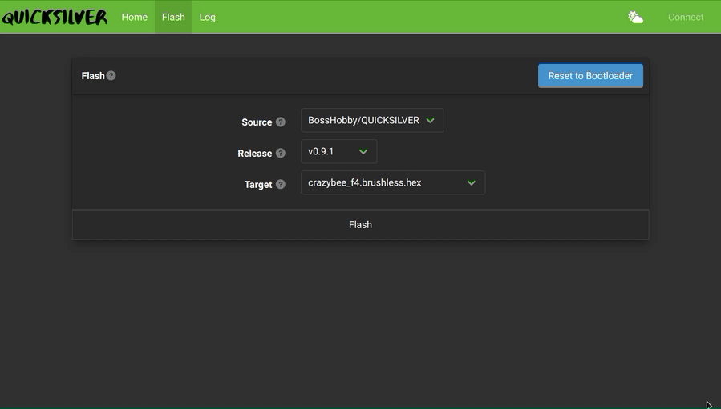

Quick Start
Get the Quicksilver Configurator
Quicksilver Configurator is a browser-based application that allows you to flash and configure QUICKSILVER on your quad through the USB port.
There is an online version here:
Quicksilver Configurator
The standalone version can be downloaded here:
Quicksilver Configurator releases page
Download and unzip the version which matches your operating system.
- quic-config-windows-amd64.zip for Windows
- quic-config-darwin-amd64.zip for Mac
- quic-config-linux-amd64.zip for Linux
Flashing a Hex File
Warning
Ensure your transmitter is turned OFF before attempting to flash firmware. This helps avoid issues getting into bootloader caused by some fcs which don't follow good design practise.
Open the Configurator. Click on the Flash tab to go to the firmware flash page.
Info
Whilst in the Flash tab you will NOT be using the Connect button in the top right

Connect a compatible flight controller via usb cable. To flash the QUICKSILVER firmware, the flight controller must be in DFU mode (bootloader mode); this can be done by holding the boot button while plugging in the flight controller, or by clicking the Reset to Bootloader button on the GUI. If no compatible device is found, check the Troubleshooting Page.
Select the Source from which you want to retrieve a hex file to flash. Selecting BossHobby/QUICKSILVER will download the firmware from github, or choose LOCAL if you have built your own hex file from the source code.
Next select the version (Release) to flash - make sure the hex file version is compatible with the gui version you are using by checking the release notes.
Finally, select a Target file which matches your hardware. If you don't know which file to flash, make sure to ask on our discord, and get advice from someone experienced with the firmware. The naming convention for hex files is <target_name>_<receiver_type>.<motor_type>.
Receiver types with names like frsky or elrs are onboard spi connected receivers and targets without a receiver type refers to serial receivers connected to a uart.
Select the Flash button to initiate the flashing process. Progress bars will appear as the flashing process is performed and a feedback will be displayed in the upper right hand corner when complete
Note
It is best practise to power cycle the fc after flashing and before connecting to the configurator for setup
After flashing, proceed to Configuring Quicksilver.
If your flash was unsuccessful for any reason - do not stress.
The stm32 microprocessors will not be damaged or bricked through the flashing process but may appear unresponsive after a failed flash.
To recover the flight-controller, manually initiate dfu by plugging the flight controller in with the boot button pressed, and try again.